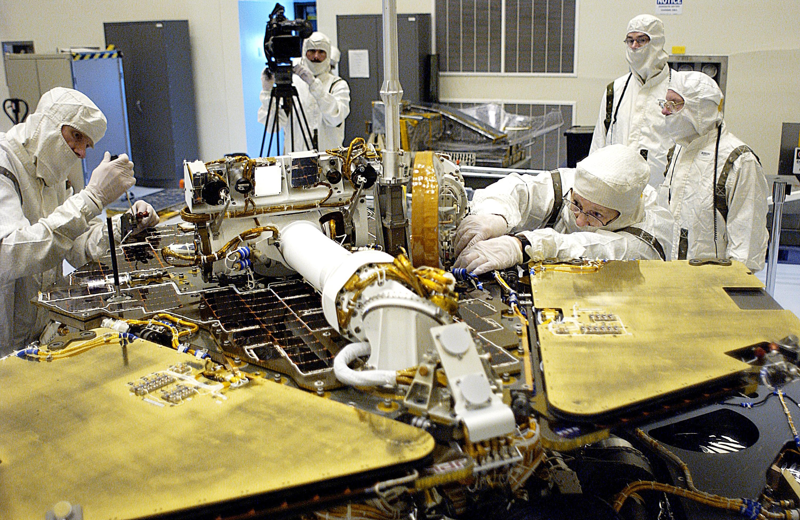

Skills: PHP, Python Django, MySQL, API integration
Overview
As part of the Production Control department focusing on electronic fabrication manufacturing operations, I developed and maintained a centralized dashboard used by both technical and non-technical team members to track the status of all circuit boards in production. This tool streamlined manufacturing workflows, improved transparency, and ensured stakeholders had real-time updates on printed circuit board assembly progress.
Research
I spoke with end-users from different roles to understand their workflow priorities and identified the important production metrics to track. I also studied existing departmental tools and API documentation from other systems to determine optimal integration points.
Goals
Obstacles
Solution
Results
Reflection
I ended up learning a lot about printed circuit boards and polymerics without ever entering the cleanrooms. Also, the refactoring of ColdFusion was tedious so I'm glad the switch to Django was able to be done from scratch. There was still a lot to be done and a lot that I was hoping to add to the application, so it's really disappointing to see the efab team halted on this progress due to the NASA budget cut.